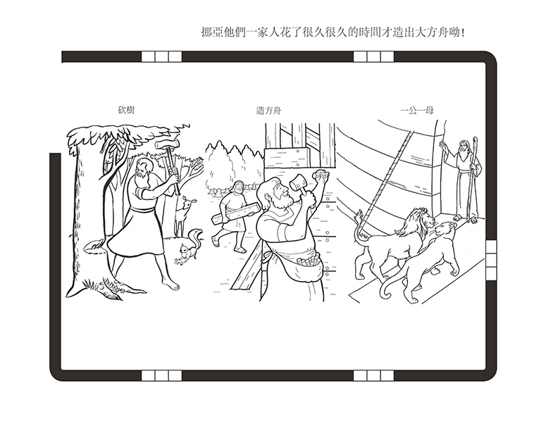
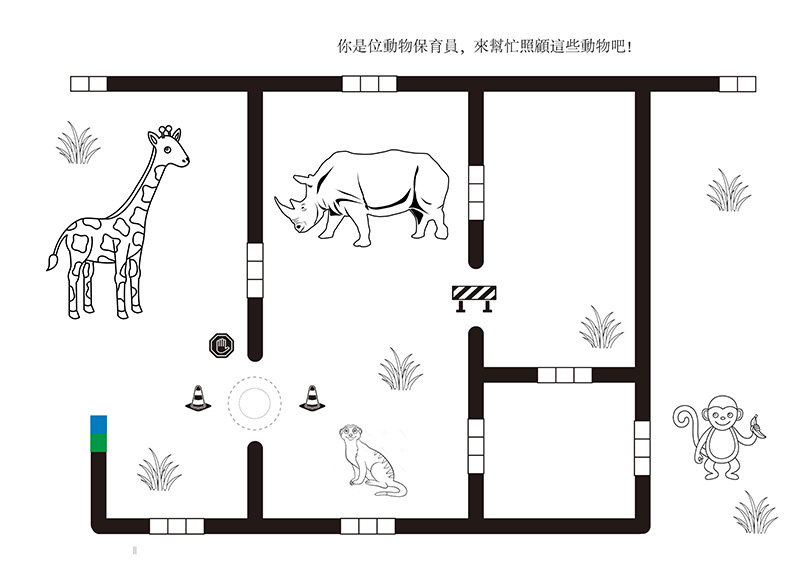
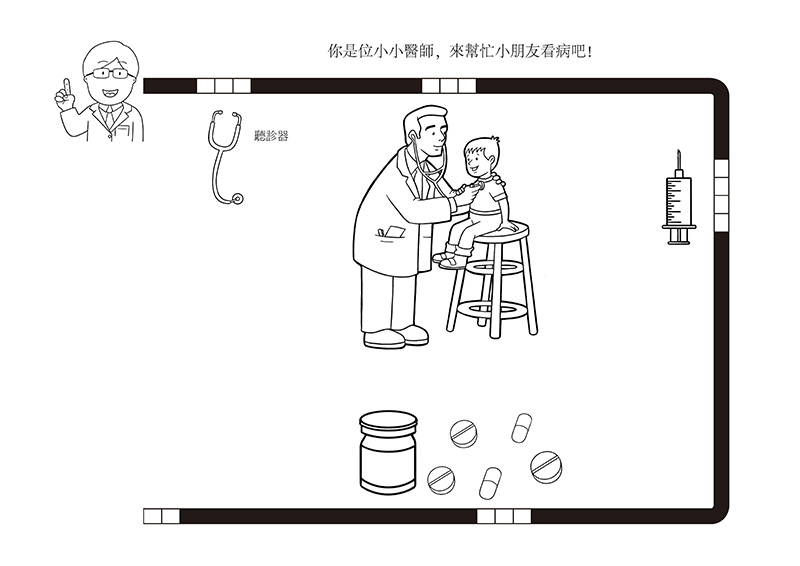
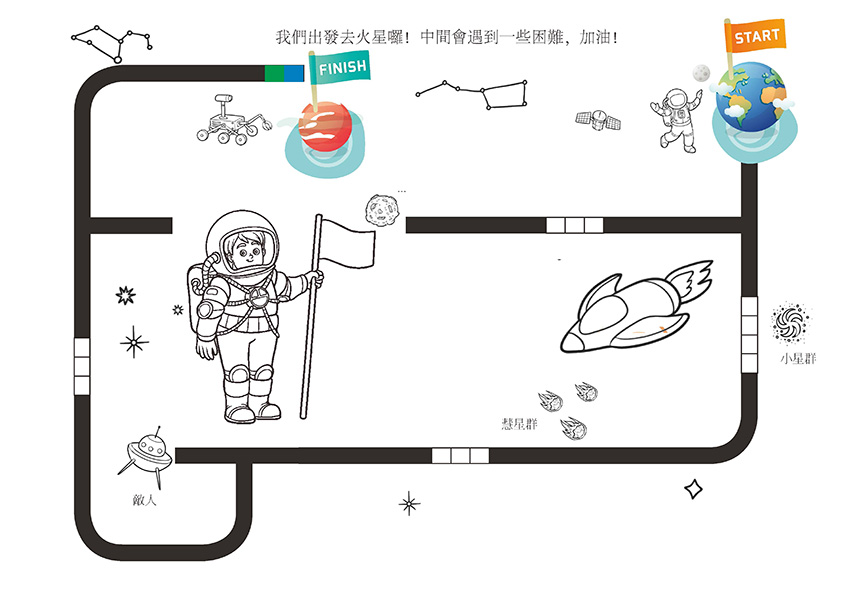

Ozobot
初階
Ozobot材料清單-五天
| 週次 | 性質 | 圖片 | 主題 | 上課流程 | 使用到的程式 | 材料 | 教案 | YouTube |
|---|---|---|---|---|---|---|---|---|
| 1 | 寒暑假 |  |
自由創作 | 無 | 空白圖紙 |
自由創作 | ||
| 2 | 寒暑假 |  |
創世紀 | [故事-創世紀] 說故事 著色 學指令 角色扮演 玩Ozobot 指令比賽 |
創世紀圖紙 角色扮演圖紙 |
創世紀 | 上帝創造世界 | |
| 3 | 寒暑假 |  | 挪亞方舟 | [故事-挪亞方舟] 說故事 著色 學指令 角色扮演 玩Ozobot 指令比賽 |
龜速「紅綠藍」 原來速度「綠黑綠」 衝刺三秒「藍綠紅」 |
挪亞方舟圖紙 角色扮演圖紙 |
挪亞方舟 | 兒童聖經故事 11 .挪亞 |
| 4 | 寒暑假 |  | 動物保育員 | [職業-太空人] 保育員介紹 著色 學指令 角色扮演 玩Ozobot 指令比賽 |
保育員圖紙 角色扮演圖紙 |
動物保育員 | 一日動物保育員 | |
| 5 | 寒暑假 |  | 醫師 | [職業-太空人] 醫師介紹 著色 學指令 角色扮演 玩Ozobot 指令比賽 |
醫師圖紙 角色扮演圖紙 |
醫師 | 醫生醫院遊戲 | |
| 6 | 寒暑假 |  | 太空人 | [職業-太空人] 太空人介紹 太陽系介紹 著色 學指令 角色扮演 玩Ozobot 指令比賽 |
中間迴轉「藍紅藍」 自轉兩圈後前進「藍綠紅綠」 左轉「綠黑紅」 直行「藍黑紅」 |
太空人圖紙 角色扮演圖紙 |
太空人 | 透視太空人的日常 太陽家庭 |
| 7 | 寒暑假 | 能源巡航 | 認識再生能源 再生能源超級爭霸戰 「化石能源」是什麼？ |
|||||
| 8 | 寒暑假 | 資源回收 | 淺談你我都知道的資源回收 資源回收勿亂丟，回收愛地球 三分鐘教你輕鬆愛世界 |
|||||
| 9 | 上學期 | |||||||
| 10 | 上學期 | |||||||
| 11 | 上學期 | |||||||
| 12 | 上學期 | |||||||
| 共用材料 | Ozobot 鉛筆 彩色筆 藍膠 |